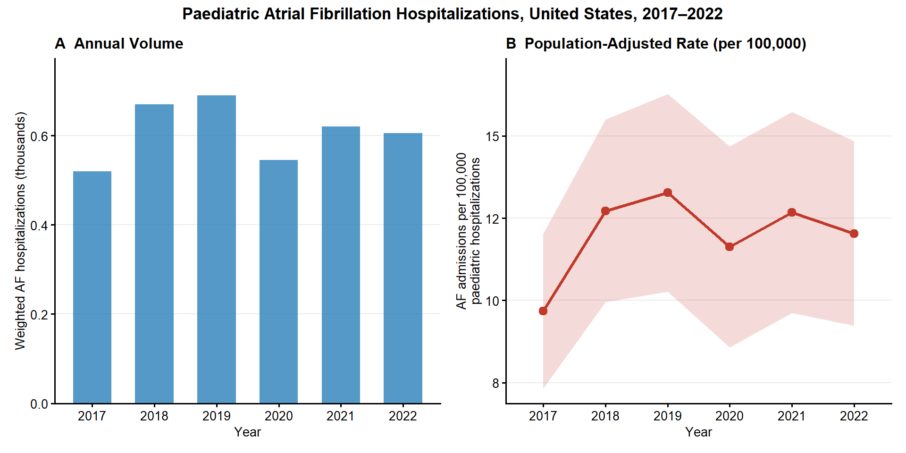
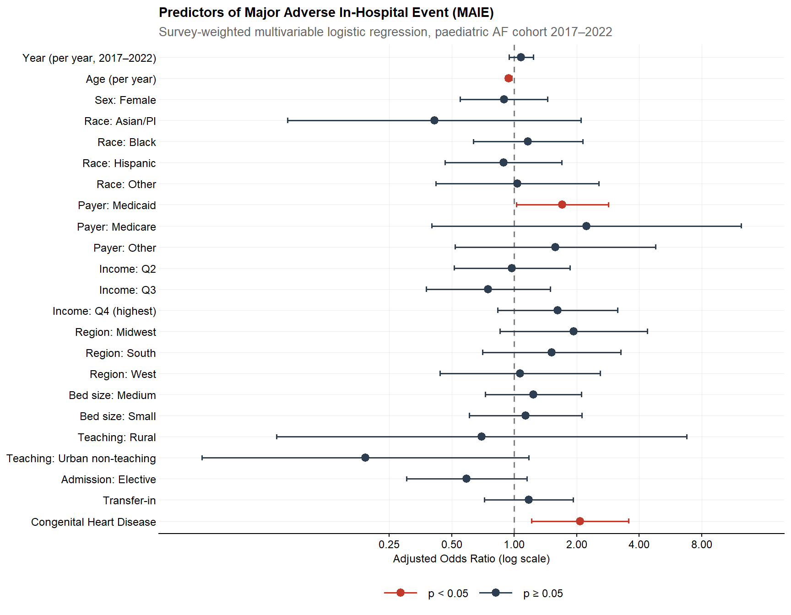

| Year | Weighted AF Hospitalizations | Total Pediatric Hospitalizations | AF Rate per 100,000 (95% CI) |
|---|---|---|---|
| 2017 | 520 | 5,375,840 | 9.7 (7.3–12.0) |
| 2018 | 670 | 5,266,260 | 12.7 (10.0–15.5) |
| 2019 | 690 | 5,199,464 | 13.3 (10.3–16.3) |
| 2020 | 545 | 4,687,162 | 11.6 (8.6–14.7) |
| 2021 | 620 | 4,890,712 | 12.7 (9.6–15.7) |
| 2022 | 605 | 5,027,451 | 12.0 (9.2–14.8) |
Atrial Fibrillation-Associated Hospitalizations Among Children and Adolescents in the United States
National Trends and In-Hospital Outcomes, 2017–2022 | NIS Analysis
Preamble
Study Objective:
To describe national trends in atrial fibrillation (AF)-associated paediatric hospitalisations in the United States from 2017 to 2022, and to identify independent patient- and hospital-level predictors of the composite Major Adverse In-Hospital Event (MAIE) outcome, which comprises in-hospital mortality, invasive mechanical ventilation, cardiac arrest, and cardiogenic shock.
Data Source:
Retrospective cross-sectional analysis of the Nationwide Inpatient Sample (NIS), 2017–2022, developed by the Agency for Healthcare Research and Quality (AHRQ) through the Healthcare Cost and Utilization Project (HCUP). The NIS is the largest all-payer publicly available inpatient database in the United States, comprising an approximately 20% stratified random sample of discharges from non-federal acute-care community hospitals. Survey-weighted analyses generate nationally representative estimates for all US community hospital discharges.
Cohort Definition:
All NIS discharges 2017–2022 in which the patient was aged ≤17 years and had an ICD-10-CM diagnosis code for atrial fibrillation (I48.0, I48.11, I48.19, I48.20, I48.21, I48.91) recorded in any of the up to 40 diagnosis fields. Legacy codes I48.1 (persistent AF) and I48.2 (chronic AF), active through FY2019, are included to ensure consistent longitudinal coverage across the 2017–2019 period before subcoding was introduced. Atrial flutter codes (I48.3, I48.4) are excluded. Discharges with ICD-10-PCS codes for cardiac Replacement or Repair (Section 02R*, 02Q*) are excluded, as post-surgical AF represents a distinct and more benign clinical trajectory. Discharges with missing principal diagnosis or missing discharge weight are excluded.
Exposures:
Year of hospitalisation (2017–2022) entered as a continuous linear integer in regression models to estimate the annual temporal trend. In a sensitivity analysis, year is modelled as a 6-level categorical variable (reference: 2017).
Primary Outcome:
Composite Major Adverse In-Hospital Event (MAIE): any of in-hospital mortality, invasive mechanical ventilation (ICD-10-PCS: 5A1935Z, 5A1945Z, 5A1955Z), cardiac arrest (I46.0, I46.2, I46.8, I46.9), or cardiogenic shock (R57.0).
Secondary Outcomes:
In-hospital mortality; length of stay (days); inflation-adjusted hospitalisation cost (total charges × cost-to-charge ratio, adjusted to 2022 USD using the Medical Care Consumer Price Index); non-home discharge (discharge to skilled nursing facility, long-term acute care, rehabilitation, against medical advice, or in-hospital death).
Trend Denominator:
AF admissions per 100,000 total paediatric NIS hospitalisations per year. This rate-based metric accounts for year-to-year fluctuations in overall paediatric admission volume (including the COVID-19–related decline in 2020) and provides a valid basis for epidemiological trend inference. The denominator is computed from all paediatric discharges (age ≤17) prior to cohort restrictions.
Covariates:
Age (continuous, years), sex (reference: Male), race/ethnicity (reference: White), median household income quartile by ZIP code (reference: Q1 — lowest), primary expected payer (reference: Private), hospital region (reference: Northeast), hospital bed size (reference: Large), hospital location and teaching status (reference: Urban teaching), admission type (reference: Non-elective), transfer-in status (reference: No transfer), structural congenital heart disease (ICD-10-CM Q20–Q26; reference: No). The Elixhauser Comorbidity Index was excluded from regression models because atrial fibrillation is a component of the index, inducing near-perfect collinearity in a cohort defined by AF diagnosis.
Statistical Methods:
All analyses account for the complex survey design of the NIS using the
surveypackage in R 4.5.1, with discharge-level weights, hospital-level clustering, and NIS strata. Baseline characteristics are summarised by year using weighted proportions (categorical variables) and weighted means with standard deviations (continuous variables); between-year differences are tested using the Rao–Scott chi-square test (categorical) and design-based t-test (continuous). The primary MAIE model uses survey-weighted quasibinomial logistic regression. Length of stay is modelled with Gaussian linear regression. Hospitalisation costs are modelled with Gamma regression with log link, the standard approach for right-skewed positive cost data. In-hospital mortality and non-home discharge are each modelled with survey-weighted quasibinomial logistic regression. Two pre-specified sensitivity analyses were conducted: (1) restricting the cohort to discharges where AF was the principal diagnosis, and (2) modelling year as a categorical variable.
Annual Trends: Hospitalisation Volume and Rate
Baseline Characteristics
| Characteristic | Overall N = 3,6501 |
2017 N = 5201 |
2018 N = 6701 |
2019 N = 6901 |
2020 N = 5451 |
2021 N = 6201 |
2022 N = 6051 |
p-value2 |
|---|---|---|---|---|---|---|---|---|
| Age, years | 12.0 (6.0) | 10.5 (6.7) | 11.9 (6.2) | 11.9 (6.0) | 11.9 (6.0) | 13.3 (5.2) | 12.3 (5.6) | 0.041 |
| Sex | 0.6 | |||||||
| Male | 2,385 (66%) | 345 (66%) | 455 (68%) | 425 (62%) | 330 (61%) | 400 (66%) | 430 (71%) | |
| Female | 1,255 (34%) | 175 (34%) | 215 (32%) | 265 (38%) | 215 (39%) | 210 (34%) | 175 (29%) | |
| Race/Ethnicity | 0.7 | |||||||
| White | 1,845 (54%) | 275 (57%) | 375 (58%) | 345 (52%) | 290 (56%) | 280 (50%) | 280 (48%) | |
| Asian or Pacific Islander | 105 (3.0%) | 20 (4.2%) | 10 (1.6%) | 30 (4.5%) | 20 (3.9%) | 10 (1.8%) | 15 (2.6%) | |
| Black | 650 (19%) | 55 (11%) | 120 (19%) | 110 (17%) | 95 (18%) | 140 (25%) | 130 (22%) | |
| Hispanic | 600 (17%) | 105 (22%) | 105 (16%) | 115 (17%) | 60 (12%) | 95 (17%) | 120 (21%) | |
| Other | 245 (7.1%) | 25 (5.2%) | 35 (5.4%) | 60 (9.1%) | 50 (9.7%) | 40 (7.1%) | 35 (6.0%) | |
| Median Household Income Quartile (by ZIP) | 0.8 | |||||||
| Q1 | 1,085 (30%) | 160 (31%) | 220 (33%) | 225 (33%) | 130 (24%) | 185 (30%) | 165 (27%) | |
| Q2 | 960 (26%) | 160 (31%) | 145 (22%) | 195 (29%) | 145 (27%) | 165 (27%) | 150 (25%) | |
| Q3 | 840 (23%) | 90 (17%) | 160 (24%) | 160 (24%) | 130 (24%) | 140 (23%) | 160 (26%) | |
| Q4 | 740 (20%) | 110 (21%) | 145 (22%) | 100 (15%) | 130 (24%) | 125 (20%) | 130 (21%) | |
| Primary Expected Payer | 0.4 | |||||||
| Private | 1,650 (45%) | 225 (43%) | 315 (47%) | 340 (49%) | 255 (47%) | 230 (37%) | 285 (47%) | |
| Medicaid | 1,680 (46%) | 265 (51%) | 285 (43%) | 285 (41%) | 245 (45%) | 335 (54%) | 265 (44%) | |
| Medicare | 60 (1.6%) | 0 (0%) | 30 (4.5%) | 5 (0.7%) | 5 (0.9%) | 15 (2.4%) | 5 (0.8%) | |
| Other | 260 (7.1%) | 30 (5.8%) | 40 (6.0%) | 60 (8.7%) | 40 (7.3%) | 40 (6.5%) | 50 (8.3%) | |
| Hospital Region | 0.8 | |||||||
| Northeast | 595 (16%) | 90 (17%) | 80 (12%) | 120 (17%) | 110 (20%) | 105 (17%) | 90 (15%) | |
| Midwest | 780 (21%) | 85 (16%) | 180 (27%) | 150 (22%) | 90 (17%) | 150 (24%) | 125 (21%) | |
| South | 1,640 (45%) | 230 (44%) | 270 (40%) | 290 (42%) | 285 (52%) | 260 (42%) | 305 (50%) | |
| West | 635 (17%) | 115 (22%) | 140 (21%) | 130 (19%) | 60 (11%) | 105 (17%) | 85 (14%) | |
| Hospital Bed Size | 0.6 | |||||||
| Large | 2,095 (57%) | 255 (49%) | 365 (54%) | 405 (59%) | 370 (68%) | 345 (56%) | 355 (59%) | |
| Medium | 855 (23%) | 130 (25%) | 170 (25%) | 145 (21%) | 95 (17%) | 140 (23%) | 175 (29%) | |
| Small | 700 (19%) | 135 (26%) | 135 (20%) | 140 (20%) | 80 (15%) | 135 (22%) | 75 (12%) | |
| Hospital Location & Teaching Status | 0.002 | |||||||
| Urban, teaching | 3,455 (95%) | 460 (88%) | 595 (89%) | 670 (97%) | 535 (98%) | 605 (98%) | 590 (98%) | |
| Rural | 65 (1.8%) | 25 (4.8%) | 10 (1.5%) | 5 (0.7%) | 5 (0.9%) | 5 (0.8%) | 15 (2.5%) | |
| Urban, non-teaching | 130 (3.6%) | 35 (6.7%) | 65 (9.7%) | 15 (2.2%) | 5 (0.9%) | 10 (1.6%) | 0 (0%) | |
| Admission Type | 0.13 | |||||||
| Non-elective | 2,995 (82%) | 385 (75%) | 540 (81%) | 570 (83%) | 435 (80%) | 540 (87%) | 525 (88%) | |
| Elective | 640 (18%) | 130 (25%) | 125 (19%) | 120 (17%) | 110 (20%) | 80 (13%) | 75 (12%) | |
| Transfer-in Status | 0.9 | |||||||
| No transfer | 2,455 (68%) | 335 (64%) | 445 (66%) | 475 (69%) | 390 (72%) | 420 (68%) | 390 (65%) | |
| Transferred in | 1,180 (32%) | 185 (36%) | 225 (34%) | 210 (31%) | 155 (28%) | 195 (32%) | 210 (35%) | |
| Structural Congenital Heart Disease (Q20–Q26) | 635 (17%) | 100 (19%) | 120 (18%) | 130 (19%) | 80 (15%) | 90 (15%) | 115 (19%) | 0.8 |
| 1 Mean (SD); n (%) | ||||||||
| 2 Design-based KruskalWallis test; Pearson’s X^2: Rao & Scott adjustment | ||||||||
Outcomes by Year
| Characteristic | Overall N = 3,6501 |
2017 N = 5201 |
2018 N = 6701 |
2019 N = 6901 |
2020 N = 5451 |
2021 N = 6201 |
2022 N = 6051 |
p-value2 |
|---|---|---|---|---|---|---|---|---|
| Major Adverse In-Hospital Event (MAIE) | 570 (16%) | 65 (12%) | 110 (16%) | 60 (8.7%) | 105 (19%) | 125 (20%) | 105 (17%) | 0.11 |
| In-Hospital Mortality | 160 (4.4%) | 5 (1.0%) | 40 (6.0%) | 10 (1.4%) | 10 (1.8%) | 55 (8.9%) | 40 (6.6%) | 0.009 |
| Invasive Mechanical Ventilation | 475 (13%) | 55 (11%) | 80 (12%) | 45 (6.5%) | 90 (17%) | 115 (19%) | 90 (15%) | 0.068 |
| Cardiac Arrest | 175 (4.8%) | 5 (1.0%) | 35 (5.2%) | 10 (1.4%) | 35 (6.4%) | 45 (7.3%) | 45 (7.4%) | 0.053 |
| Cardiogenic Shock | 120 (3.3%) | 15 (2.9%) | 30 (4.5%) | 5 (0.7%) | 15 (2.8%) | 20 (3.2%) | 35 (5.8%) | 0.3 |
| Length of Stay (days) | 3 (1, 8) | 2 (1, 7) | 3 (1, 9) | 3 (1, 6) | 3 (1, 9) | 3 (1, 8) | 3 (1, 7) | >0.9 |
| Inflation-Adjusted Hospital Costs (2022 USD) | 13,863 (5,985, 44,588) | 11,139 (5,017, 40,583) | 13,789 (5,158, 41,742) | 12,484 (4,945, 34,143) | 17,070 (6,792, 61,643) | 20,235 (8,009, 53,650) | 13,448 (6,195, 36,333) | 0.024 |
| Non-Home Discharge | 540 (15%) | 60 (12%) | 115 (17%) | 70 (10%) | 70 (13%) | 110 (18%) | 115 (19%) | 0.3 |
| 1 n (%); Median (Q1, Q3) | ||||||||
| 2 Pearson’s X^2: Rao & Scott adjustment; Design-based KruskalWallis test | ||||||||
Top-10 Principal Diagnoses
| Rank | ICD-10-CM Code | Weighted n | |
|---|---|---|---|
| I4891 | 1 | I4891 | 635 |
| I480 | 2 | I480 | 210 |
| I471 | 3 | I471 | 180 |
| I4892 | 4 | I4892 | 135 |
| A419 | 5 | A419 | 65 |
| Z3801 | 6 | Z3801 | 65 |
| I456 | 7 | I456 | 55 |
| Q234 | 8 | Q234 | 55 |
| I4819 | 9 | I4819 | 50 |
| I472 | 10 | I472 | 40 |
Primary Outcome: Predictors of Major Adverse In-Hospital Event (MAIE)
| Characteristic | OR | 95% CI | p-value |
|---|---|---|---|
| Year (continuous, 2017–2022) | 1.08 | 0.94, 1.24 | 0.3 |
| Age, years | 0.94 | 0.91, 0.98 | 0.001 |
| Sex | |||
| Male | — | — | |
| Female | 0.89 | 0.55, 1.45 | 0.6 |
| Race/Ethnicity | |||
| White | — | — | |
| Asian or Pacific Islander | 0.41 | 0.08, 2.10 | 0.3 |
| Black | 1.17 | 0.64, 2.14 | 0.6 |
| Hispanic | 0.89 | 0.46, 1.70 | 0.7 |
| Other | 1.03 | 0.42, 2.56 | >0.9 |
| Primary Expected Payer | |||
| Private | — | — | |
| Medicaid | 1.71 | 1.03, 2.84 | 0.040 |
| Medicare | 2.22 | 0.40, 12.4 | 0.4 |
| Other | 1.58 | 0.52, 4.79 | 0.4 |
| Median Household Income Quartile (by ZIP) | |||
| Q1 | — | — | |
| Q2 | 0.98 | 0.51, 1.86 | >0.9 |
| Q3 | 0.75 | 0.38, 1.49 | 0.4 |
| Q4 | 1.62 | 0.83, 3.15 | 0.2 |
| Hospital Region | |||
| Northeast | — | — | |
| Midwest | 1.93 | 0.85, 4.38 | 0.11 |
| South | 1.52 | 0.70, 3.27 | 0.3 |
| West | 1.07 | 0.44, 2.59 | 0.9 |
| Hospital Bed Size | |||
| Large | — | — | |
| Medium | 1.23 | 0.72, 2.10 | 0.4 |
| Small | 1.14 | 0.61, 2.12 | 0.7 |
| Hospital Location & Teaching Status | |||
| Urban, teaching | — | — | |
| Rural | 0.70 | 0.07, 6.79 | 0.8 |
| Urban, non-teaching | 0.19 | 0.03, 1.17 | 0.074 |
| Admission Type | |||
| Non-elective | — | — | |
| Elective | 0.59 | 0.30, 1.15 | 0.12 |
| Transfer-in Status | |||
| No transfer | — | — | |
| Transferred in | 1.18 | 0.72, 1.92 | 0.5 |
| Structural Congenital Heart Disease | |||
| No | — | — | |
| Yes | 2.08 | 1.21, 3.56 | 0.008 |
| Abbreviations: CI = Confidence Interval, OR = Odds Ratio | |||
Secondary Outcome: Length of Stay
| Characteristic | Beta | 95% CI | p-value |
|---|---|---|---|
| Year (continuous, 2017–2022) | 0.13 | -0.50, 0.77 | 0.7 |
| Age, years | -0.55 | -0.82, -0.28 | <0.001 |
| Sex | |||
| Male | — | — | |
| Female | 1.3 | -1.0, 3.6 | 0.3 |
| Race/Ethnicity | |||
| White | — | — | |
| Asian or Pacific Islander | 2.4 | -3.2, 8.0 | 0.4 |
| Black | 0.34 | -2.5, 3.2 | 0.8 |
| Hispanic | 0.82 | -1.9, 3.5 | 0.5 |
| Other | 4.2 | -3.2, 12 | 0.3 |
| Primary Expected Payer | |||
| Private | — | — | |
| Medicaid | 0.61 | -1.9, 3.1 | 0.6 |
| Medicare | -3.2 | -7.3, 0.95 | 0.13 |
| Other | -2.7 | -5.4, 0.03 | 0.052 |
| Median Household Income Quartile (by ZIP) | |||
| Q1 | — | — | |
| Q2 | 1.7 | -1.3, 4.6 | 0.3 |
| Q3 | 0.73 | -2.0, 3.5 | 0.6 |
| Q4 | 0.64 | -2.5, 3.8 | 0.7 |
| Hospital Region | |||
| Northeast | — | — | |
| Midwest | 0.46 | -2.6, 3.5 | 0.8 |
| South | -0.16 | -3.1, 2.7 | >0.9 |
| West | 0.21 | -3.2, 3.6 | >0.9 |
| Hospital Bed Size | |||
| Large | — | — | |
| Medium | 1.2 | -1.0, 3.3 | 0.3 |
| Small | 3.3 | -0.09, 6.7 | 0.057 |
| Hospital Location & Teaching Status | |||
| Urban, teaching | — | — | |
| Rural | -6.5 | -11, -2.3 | 0.003 |
| Urban, non-teaching | -3.4 | -7.0, 0.19 | 0.063 |
| Admission Type | |||
| Non-elective | — | — | |
| Elective | -1.6 | -4.2, 0.98 | 0.2 |
| Transfer-in Status | |||
| No transfer | — | — | |
| Transferred in | 0.30 | -2.0, 2.6 | 0.8 |
| Structural Congenital Heart Disease | |||
| No | — | — | |
| Yes | 4.5 | 0.59, 8.4 | 0.024 |
| Abbreviation: CI = Confidence Interval | |||
Secondary Outcome: Hospitalization Costs
| Characteristic | exp(Beta) | 95% CI | p-value |
|---|---|---|---|
| Year (continuous, 2017–2022) | 1.09 | 0.99, 1.20 | 0.088 |
| Age, years | 0.96 | 0.93, 0.99 | 0.015 |
| Sex | |||
| Male | — | — | |
| Female | 1.18 | 0.85, 1.64 | 0.3 |
| Race/Ethnicity | |||
| White | — | — | |
| Asian or Pacific Islander | 0.96 | 0.61, 1.52 | 0.9 |
| Black | 1.19 | 0.74, 1.94 | 0.5 |
| Hispanic | 0.89 | 0.59, 1.34 | 0.6 |
| Other | 1.26 | 0.62, 2.57 | 0.5 |
| Primary Expected Payer | |||
| Private | — | — | |
| Medicaid | 1.60 | 1.13, 2.28 | 0.008 |
| Medicare | 0.74 | 0.37, 1.47 | 0.4 |
| Other | 1.40 | 0.73, 2.67 | 0.3 |
| Median Household Income Quartile (by ZIP) | |||
| Q1 | — | — | |
| Q2 | 1.34 | 0.86, 2.09 | 0.2 |
| Q3 | 1.09 | 0.73, 1.61 | 0.7 |
| Q4 | 1.20 | 0.78, 1.83 | 0.4 |
| Hospital Region | |||
| Northeast | — | — | |
| Midwest | 1.00 | 0.62, 1.63 | >0.9 |
| South | 0.92 | 0.58, 1.47 | 0.7 |
| West | 1.34 | 0.81, 2.21 | 0.2 |
| Hospital Bed Size | |||
| Large | — | — | |
| Medium | 1.77 | 1.23, 2.53 | 0.002 |
| Small | 1.65 | 1.06, 2.55 | 0.026 |
| Hospital Location & Teaching Status | |||
| Urban, teaching | — | — | |
| Rural | 0.16 | 0.07, 0.41 | <0.001 |
| Urban, non-teaching | 0.40 | 0.23, 0.71 | 0.002 |
| Admission Type | |||
| Non-elective | — | — | |
| Elective | 1.15 | 0.87, 1.52 | 0.3 |
| Transfer-in Status | |||
| No transfer | — | — | |
| Transferred in | 1.13 | 0.79, 1.62 | 0.5 |
| Structural Congenital Heart Disease | |||
| No | — | — | |
| Yes | 2.01 | 1.37, 2.94 | <0.001 |
| Abbreviation: CI = Confidence Interval | |||
Secondary Outcome: In-Hospital Mortality
| Characteristic | OR | 95% CI | p-value |
|---|---|---|---|
| Year (continuous, 2017–2022) | 1.34 | 1.03, 1.74 | 0.030 |
| Age, years | 0.93 | 0.86, 1.01 | 0.074 |
| Sex | |||
| Male | — | — | |
| Female | 1.02 | 0.40, 2.58 | >0.9 |
| Race/Ethnicity | |||
| White | — | — | |
| Asian or Pacific Islander | 0.00 | 0.00, 0.00 | <0.001 |
| Black | 2.01 | 0.64, 6.27 | 0.2 |
| Hispanic | 0.82 | 0.20, 3.41 | 0.8 |
| Other | 0.64 | 0.06, 7.40 | 0.7 |
| Primary Expected Payer | |||
| Private | — | — | |
| Medicaid | 1.09 | 0.40, 2.98 | 0.9 |
| Medicare | 16.7 | 2.19, 127 | 0.007 |
| Other | 2.69 | 0.52, 13.9 | 0.2 |
| Median Household Income Quartile (by ZIP) | |||
| Q1 | — | — | |
| Q2 | 0.45 | 0.13, 1.58 | 0.2 |
| Q3 | 0.48 | 0.12, 1.84 | 0.3 |
| Q4 | 0.62 | 0.16, 2.50 | 0.5 |
| Hospital Region | |||
| Northeast | — | — | |
| Midwest | 15.8 | 1.87, 134 | 0.011 |
| South | 3.06 | 0.37, 25.1 | 0.3 |
| West | 5.04 | 0.50, 50.8 | 0.2 |
| Hospital Bed Size | |||
| Large | — | — | |
| Medium | 1.89 | 0.70, 5.06 | 0.2 |
| Small | 0.69 | 0.23, 2.05 | 0.5 |
| Hospital Location & Teaching Status | |||
| Urban, teaching | — | — | |
| Rural | 0.00 | 0.00, 0.00 | <0.001 |
| Urban, non-teaching | 0.00 | 0.00, 0.00 | <0.001 |
| Admission Type | |||
| Non-elective | — | — | |
| Elective | 0.00 | 0.00, 0.00 | <0.001 |
| Transfer-in Status | |||
| No transfer | — | — | |
| Transferred in | 1.34 | 0.54, 3.30 | 0.5 |
| Structural Congenital Heart Disease | |||
| No | — | — | |
| Yes | 1.53 | 0.53, 4.41 | 0.4 |
| Abbreviations: CI = Confidence Interval, OR = Odds Ratio | |||
Secondary Outcome: Non-Home Discharge
| Characteristic | OR | 95% CI | p-value |
|---|---|---|---|
| Year (continuous, 2017–2022) | 1.07 | 0.92, 1.24 | 0.4 |
| Age, years | 0.99 | 0.95, 1.03 | 0.6 |
| Sex | |||
| Male | — | — | |
| Female | 1.50 | 0.90, 2.51 | 0.12 |
| Race/Ethnicity | |||
| White | — | — | |
| Asian or Pacific Islander | 1.56 | 0.43, 5.61 | 0.5 |
| Black | 1.36 | 0.70, 2.65 | 0.4 |
| Hispanic | 0.75 | 0.37, 1.53 | 0.4 |
| Other | 1.82 | 0.80, 4.14 | 0.2 |
| Primary Expected Payer | |||
| Private | — | — | |
| Medicaid | 1.17 | 0.71, 1.92 | 0.5 |
| Medicare | 8.02 | 1.54, 41.7 | 0.014 |
| Other | 1.28 | 0.45, 3.67 | 0.6 |
| Median Household Income Quartile (by ZIP) | |||
| Q1 | — | — | |
| Q2 | 0.93 | 0.50, 1.71 | 0.8 |
| Q3 | 0.48 | 0.23, 1.00 | 0.051 |
| Q4 | 0.75 | 0.36, 1.57 | 0.5 |
| Hospital Region | |||
| Northeast | — | — | |
| Midwest | 1.03 | 0.50, 2.14 | >0.9 |
| South | 0.60 | 0.31, 1.16 | 0.13 |
| West | 0.74 | 0.33, 1.67 | 0.5 |
| Hospital Bed Size | |||
| Large | — | — | |
| Medium | 0.89 | 0.51, 1.58 | 0.7 |
| Small | 0.78 | 0.40, 1.53 | 0.5 |
| Hospital Location & Teaching Status | |||
| Urban, teaching | — | — | |
| Rural | 5.00 | 0.95, 26.2 | 0.057 |
| Urban, non-teaching | 1.18 | 0.35, 4.00 | 0.8 |
| Admission Type | |||
| Non-elective | — | — | |
| Elective | 0.50 | 0.23, 1.08 | 0.077 |
| Transfer-in Status | |||
| No transfer | — | — | |
| Transferred in | 1.15 | 0.69, 1.90 | 0.6 |
| Structural Congenital Heart Disease | |||
| No | — | — | |
| Yes | 1.06 | 0.57, 1.95 | 0.9 |
| Abbreviations: CI = Confidence Interval, OR = Odds Ratio | |||
Figures
Figure 1 — Annual Hospitalisation Volume and Population-Adjusted Rate

Figure 2 — Predictors of Major Adverse In-Hospital Event (MAIE)

Sensitivity Analysis 1: AF as Principal Diagnosis
Sensitivity Analysis 1 cohort: N = 190, MAIE events = 3Fewer than 30 MAIE events in this subgroup — results reported descriptively only.Sensitivity Analysis 2: Year as Categorical Variable
| Characteristic | OR | 95% CI | p-value |
|---|---|---|---|
| Year (categorical, reference = 2017) | |||
| 2017 | — | — | |
| 2018 | 1.25 | 0.55, 2.85 | 0.6 |
| 2019 | 0.56 | 0.23, 1.36 | 0.2 |
| 2020 | 1.44 | 0.60, 3.47 | 0.4 |
| 2021 | 1.80 | 0.80, 4.04 | 0.2 |
| 2022 | 1.18 | 0.52, 2.70 | 0.7 |
| AGE | 0.94 | 0.90, 0.97 | 0.001 |
| FEMALE | |||
| Male | — | — | |
| Female | 0.89 | 0.55, 1.45 | 0.6 |
| RACE | |||
| White | — | — | |
| Asian or Pacific Islander | 0.43 | 0.08, 2.26 | 0.3 |
| Black | 1.11 | 0.61, 2.05 | 0.7 |
| Hispanic | 0.89 | 0.46, 1.74 | 0.7 |
| Other | 1.08 | 0.43, 2.71 | 0.9 |
| Insurance | |||
| Private | — | — | |
| Medicaid | 1.63 | 0.98, 2.70 | 0.060 |
| Medicare | 2.05 | 0.38, 11.0 | 0.4 |
| Other | 1.53 | 0.49, 4.72 | 0.5 |
| ZIPINC_QRTL | |||
| Q1 | — | — | |
| Q2 | 0.95 | 0.49, 1.81 | 0.9 |
| Q3 | 0.72 | 0.36, 1.42 | 0.3 |
| Q4 | 1.50 | 0.77, 2.92 | 0.2 |
| HOSP_REGION | |||
| Northeast | — | — | |
| Midwest | 1.95 | 0.85, 4.48 | 0.11 |
| South | 1.55 | 0.72, 3.35 | 0.3 |
| West | 1.07 | 0.43, 2.66 | 0.9 |
| HOSP_BEDSIZE | |||
| Large | — | — | |
| Medium | 1.25 | 0.72, 2.16 | 0.4 |
| Small | 1.14 | 0.60, 2.15 | 0.7 |
| HOSP_LOCTEACH | |||
| Urban, teaching | — | — | |
| Rural | 0.70 | 0.07, 7.22 | 0.8 |
| Urban, non-teaching | 0.18 | 0.03, 1.12 | 0.066 |
| ELECTIVE | |||
| Non-elective | — | — | |
| Elective | 0.56 | 0.28, 1.10 | 0.094 |
| TRAN_IN | |||
| No transfer | — | — | |
| Transferred in | 1.16 | 0.71, 1.91 | 0.5 |
| CongenitalHD | |||
| No | — | — | |
| Yes | 2.15 | 1.24, 3.74 | 0.007 |
| Abbreviations: CI = Confidence Interval, OR = Odds Ratio | |||